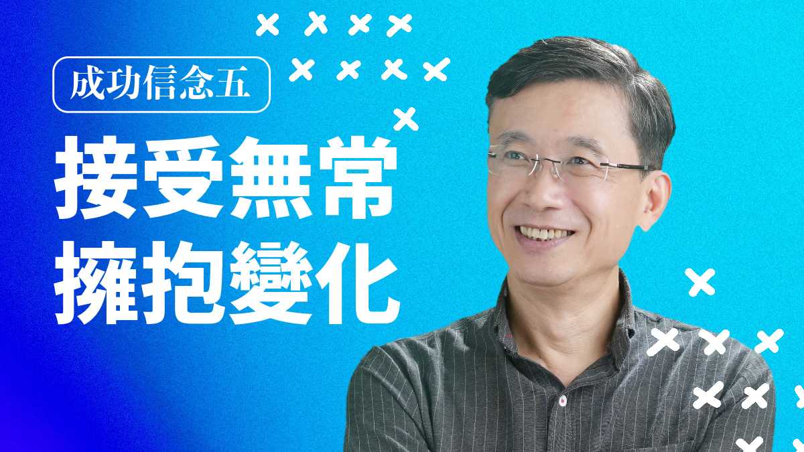
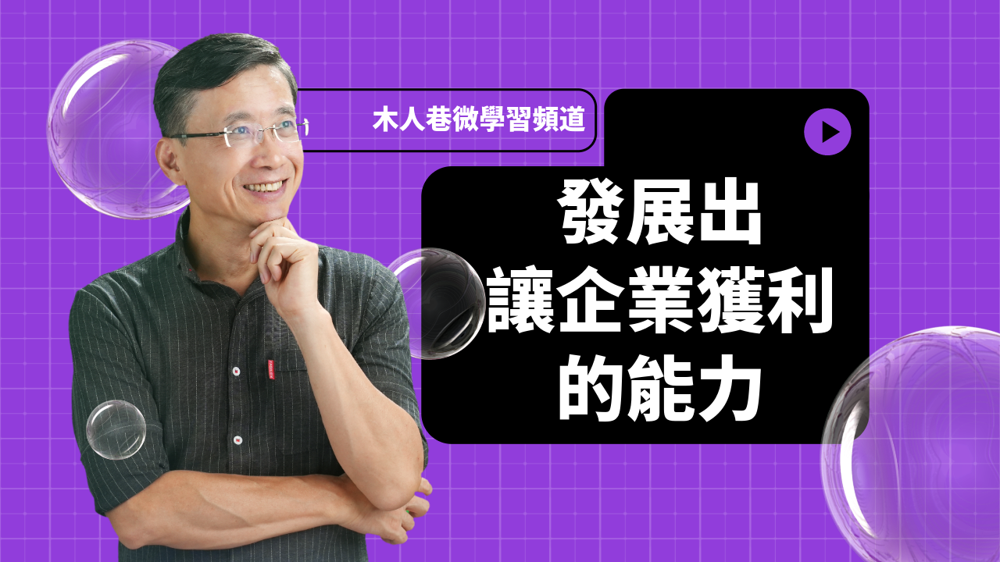

田冠鈞
教學設計師
知識萃取專家
AI技術探索者
學習理論實踐者
About
我是木人巷公司的執行長/創辦人，從事數位課程的開發設計已近二十年！
我熱愛這個工作，因為我從小就對「如何有效學習」有濃厚興趣！
成立自己的公司，設定這個工作，不僅讓我可以發揮天賦，還擁有寬廣的揮灑空間，持續享受學習、成長、與創造的樂趣！
- 公司網頁:www.kjsimulation.com
- 公司電話: +886-2-26789120
- 個人郵箱: kwanjuntyan@gmail.com
- 個人FB： http://www.facebook.com/kwanjuntyan
- 學歷: 印第安那大學教學系統科技 博士
- 興趣: 創作、探索、分享
- 休閒: 水電維修、自助旅行、爬山、看電影
- 心願: 希望這世界能因我的存在，而多添一點點美好…
Resume
我的求學歷程與職涯發展，是一個螺旋交織的漸進聚焦過程！ 大學雖畢業於電機系，卻因對「人類如何學習」深感興趣而進入「人工智慧研究室」擔任研究助理！ 也因此職務而認識到「認知科學」及多媒體應用的趣味，遂繼續求學並取得「教學系統科技系」的博士。 回台後創立了軟體設計公司，接著在淡江大學的「教育科技系」擔任助理教授，在企業界與學術界持續探索。 最後成立了木人巷公司，聚焦在數位學習，從此生根發展，茁壯至今。 最近更結合AI技術，讓生產力與創造力獲得大幅度提昇，也讓我對未來的發展充滿好奇與想像！
Education
2002.12~2003.08:
美國印第安那大學教學系統科技所 博士
- 於2002年底再度赴美，完成博士論文「台灣企業界推廣數位學習之障礙」
1993.07~1998.06:
美國印第安那大學教學系統科技所 博士候選人
- 1998年通過博士候選人口試後，即回台創業
- 1993年直接申請進入博士班
1992.07~1993.07:
清華大學人工智慧實驗室 研究助理
- 1992：清華大學攝影比賽第二名
- 1992：中國時報童話徵文全國第
- 1992：陳國政童話徵文全國第五名
1986.07~1990.07:
國立清華大學電機工程學系 學士
- 1988：學生會副主席
- 1987：合唱團學藝股長
- 1986：山地服務社社員
1984.07~1986.07:
建國中學
- 1985：數學競試全校第二十名
- 1985：數學科展全學年第二名
Professional Experience
2008.01~Present
木人巷股份有限公司 執行長/創辦人
- 親手設計二十多套數位課程，主題涵蓋職場所需的各式核心職能。
- 主筆「來到木人巷」電子報，讀者涵蓋台灣千大企業之人資訓練部門。
- 詳情請見 www.kjsimulation.com
2012.02~2012.07
清華大學學習科學研究所 兼任助理教授
2004.08~2008.07
淡江大學教育科技系所 專任助理教授
- 授課主題包含「教學設計、教學策略、學習策略、創新推廣、測驗評量、研究方法、企業實務、Flash 軟體設計」等。
- 帶領研發團隊為台新銀行、緯創資通、奇美電子等多家企業，開發客製化模擬訓練教材。
2004.03~2004.12
資策會 數位學習產業推動與發展計畫 顧問
- 協助「數位教材研發中心」之評估規劃。
2002.03~2007.12
數位學習產業聯盟 執行顧問
- 為聯盟創始會員之一，並主筆「數位學習產業白皮書」。
2001.09~2002.07
中央大學學習科技研究中心 亞卓市副執行長
- 協助亞卓市建立營運模式。
- 參與「數位學習國家型科技計畫」先期規劃工作。
2001.01~2001.07
象山集團-勁學網資訊科技股份有限公司 總經理
- 象山集團轄有勁報、中天電視、Power989 廣播電台、道生教育機構等多家企業，勁學網為其跨足數位學習之公司。
1998.07~2001.01
諾普科技有限公司 總經理/創辦人
- 諾普科技為專業的企業資源規劃軟體 (ERP) 設計公司。
- 帶領研發團隊成功開發出「進銷存、會計、薪資、倉儲、銀行基金交易、餐飲管理」等各式軟體系統。
1994.07~1998.06
美國 CRLT (Center for Research on Learning and Technology) MIS
- CRLT 是 AT&T 捐贈給印第安那大學的技術展示中心，擁有當時最先進的多媒體電腦暨通訊設備。
- 工作四年，績效卓越，獲頒「優秀員工」獎牌。
1993.09~1994.07
美國 ERIC (Educational Resources Information Center) 資料庫程式設計師
- ERIC 是美國教育部所成立之教育資料搜尋中心，供全美教師使用。
- 負責開發其進銷存系統。
1992.07~1993.07
清華大學資訊所人工智慧自然語言實驗室 研究助理
- 研究人工智慧在自然語言處理的應用，如新式輸入法、語音辨識等技術。
1990.08~1992.05
中華民國陸軍 通訊少尉
- 擔任野戰部隊通訊排排長。
Portfolio：我曾設計的數位課程
如果要問我這二十年來有什麼重要作品，大概就是在木人巷公司所設計的各式課程吧！ 雖然這些作品現在都是公司網站上的商品～點選後會連到公司網站！ 但背後的設計可都是我的心血，所以放在我的網站應該也不為過！ 自己寫的課程有個好處：想改就改，想刪就刪！所以這些年來，許多內容都已經有所增減。 隨著AI的興起，課程的製作方式也有了大幅改變， 未來我也將持續改版，讓它們能與日俱新，常保活力！
- All
- 核心職能類
- 管理職能類
- 專業職能類
Portfolio: 我曾錄製的Youtube影片
我在2023年底，曾基於興趣與公益，利用閒暇錄製了一系列的Youtube影片，想傳授應屆畢業生一些重要的職場能力！
但這個計畫還沒正式推廣，就因為AI技術的興起而耽擱了～因為我發現，AI將可透過Avatar技術，自動生成講師的聲音、動作、表情，未來我只要寫出文稿，
就可以持續推出影片，這樣不僅效率更高，也免去講師進棚錄影的上妝、背稿、咬字之苦！
我興奮之餘，便全心投入AI技術的研發，果然大幅提高公司的生產力與創造力，也隨之接到許多大廠的訂單！忙不過來，就沒空再繼續製作這套課程了。
回首再看這些影片，雖覺得青澀，仍也充滿感念，感謝當初這段機緣，才有後面的這些發展與樂趣！
0-1_課程緣起～企業主管的感慨
這段影片說明課程的設計緣起
0-2_課程內容及規劃
這段影片講解課程的結構與內容
1-1_職場是價值交換的場所
本影片是第一篇「認識職場」的開場，提出了「價值交換」的關鍵論述！該論述不僅衍生本篇其他影片， 更貫穿日後其他各篇，成為本套課程的開山基石！
1-2_價值交換的六個延伸觀點
本影片繼續闡述「價值交換」原則，鼓勵學員為了獲得所嚮往的職場報酬，必須用心在學校和職場中培養雇主需要的能力，並忍受過程中必要的痛苦與挫折！
1-3_把自己當成一人公司
本影片鼓勵學員把自己當成一人公司來經營，就可以化繁為簡，把學校和職場看成同一場旅程中的不同階段：目標是相同的；所有學習經驗都可以累積彙整；所有挫折也都可以當成培養未來能力的養分！這個觀點不僅有利於學校學習，也有利於職場發展！學員可藉此培養獨立自主與創業精神，並讓未來擁有更寬闊的揮灑空間！
1-4_如何達成最有利的價值交換

本影片鼓勵學員透過「認識雇主、認識自己、找出最有利交換、善用滾雪球策略」四個訣竅，將自己從一個能力普通，報酬也低的新人，逐步培養成為一個能力高強、報酬豐厚、熱情洋溢的職場高手！這是一套「漸進累積、以慢打快、後發先至」的高明功夫！
1-5_職場提供的報酬有哪些
本影片以馬斯洛的分類法，詳細介紹職場所提供的各種報酬！講者藉此引導學員，應根據自己的內在需求，辨認出最渴望的職場報酬！學員認清這個關連之後，就可以激發自己的學習熱情，並在面對不同企業所提供的不同報酬方案時，做出對自己最有利的抉擇！
1-6_獲利是企業的天職與美德
本影片破除士大夫觀點，以積極正面態度，闡述企業獲利和價值創造的崇高關係，讓學員理解企業追求獲利的必要性！講者藉此鼓勵學員：只要能培養出幫助企業獲利的能力，自然就能為自己帶來最大的報酬！
2-1_觀念先改變，能力才能提昇
本影片是第二篇「職場成功信念」的開場，強調個人信念對其能力發展的深遠影響，鼓勵新人要打破學校所養成的錯誤信念，建立符合職場需求的正確信念，才能順利走上職場的成功之路！本篇後續的每個影片，都將各探討一個信念，請拭目以待！
2-2_成功信念一：企業是更好的學校
本影片鼓勵學生，不要擔心選錯科系或準備不足而不敢踏入職場！相反地，只要你願意改變學習態度及方法，職場將是更好的學校，會更有效率地把你栽培成專業人士！而且，生命是一條長河，是不斷累積、流動、改變的，惟有保持持續學習的態度，才能讓你的能力持續成長，歷久彌新！
2-3_成功信念二：你是來服務客戶，不是被客戶服務
本影片鼓勵學員進入職場後，就要放下學校所養成的「被服務」心態，改採職場所需要的「服務客戶」心態！因為這種新價值觀才符合「價值交換原則」，讓你可以培養出更卓越的服務能力來和客戶交換更高的報酬，也才能引領你走上職場的成功之路！
2-4_成功信念三：放下自尊心
本影片鼓勵學員進入職場後，就要放下學校所養成的「自尊心」，才不會陷入自尊心所導致的困境：不願服務客戶、不肯問問題、不肯認錯、愛找藉口、需要過多讚美、玻璃心！惟有放下自尊心，才能順利走出這些困境，踏上職場的成功之路！
2-5_成功信念四：追求成果的卓越，而不是條件的公平

本影片鼓勵學員進入職場後，就該放下學校所養成的「條件式公平」信念，才不會陷入愛比較、愛計較、愛抱怨、見不得別人好的困境；而應改採職場的「成果式公平」信念，把職場報酬當作激勵自己的誘因，並專注在提昇自身能力，最後就能靠能力化解條件的不公平，踏上職場的成功之路！
2-6_成功信念五：接受無常 擁抱變化
本影片鼓勵學員進入職場後，就該放下學校所養成的對「不變」的執著，才不會陷入僵化刻板、墨守成規、固步自封的困境。應該接受職場「變」的本質，保持彈性、自行揮灑、順應局勢，才能提昇自己的適應能力，踏上職場的成功之路！
3-1_認識職場所需能力，是新人的必修課
本影片是第三篇「職場能力」的開場，鼓勵新人在進入職場前，應該對職場所需能力有全面性的深入瞭解，才能找到學習的目的、追求最理想的報酬、發展出最有效的學習方法、並為自己的人生打造出攻守兼備，可長可久的職涯發展藍圖！
3-2_職能的起源與影響
本影片探討「職場能力」的諸多面向：首先釐清職能的定義，接著介紹其起源是來自1970年代美國外交史上的一個選才困境！然後探討該案例後來對教育、訓練、學習各領域所產生的重大影響！最後再以一間日本醫院的實際案例，說明學校所學與職場所需的差異，鼓勵學員應補足落差，才能成為傑出的職場人才！
3-3_職場能力有哪些分類：(一)Spencer冰山模型
接下來的數集影片將探討職場能力的分類與性質，首先登場的是Spencer的冰山模型！講者根據該模型，將職能區分成知識、技能、自我概念、特質、動機五大類，並介紹其內涵及範例。鼓勵學員要根據職能特性，檢視行業需求以及個人潛力，進而找到最經濟有效的學習策略，達成最有利的職涯發展目標！
3-4_職場能力有哪些分類：(二)企業常用模型
企業基於實務需求，常將職能區分成專業職能、核心職能、及管理職能三大類。本影片將探討這些分類的特性、用途、及所屬職能！鼓勵學員應認識職能的價值，採取主動學習的態度，將職能落實在解決實際問題，並持續追求更大的挑戰，才能真正掌握職能，成為職場的專業人士！
3-5_發展出讓企業獲利的能力
講者透過Michael Porter的企業價值鏈模型，探討職場所需能力！鼓勵學員在應用職場能力時，不要只是照本宣科，還要協助企業「提高收入、降低成本」，讓企業因自己的能力而獲利！這才是企業需要的能力，也才是老闆看重的人才！未來即使自行創業，這也是最關鍵的能力！
Portfolio: 我曾創作的童話
大學畢業後，在機緣巧合之下，我曾寫過幾篇童話，贏得不少獎項。
雖然我並沒有持續創作童話，但這意外之喜卻讓我對自己更有信心，勇於挑戰未知的領域！
我相信多年之後，我能寫出各式各樣的教材，就是基於當年那幾篇小小童話所累積的信心！
所以我決定把當年的青澀作品繼續放在這裡，當作對自己的鼓勵。
內在的我，一直是個不願長大的孩子～單純、誠懇、倔強、好奇、想飛...
雖然外在的世界迫使我得長大，
但我永遠珍惜與呵護，
內心深處的那顆赤子之心...
Academic
在我創立木人巷公司之前，曾在大學擔任助理教授長達四年，所以我也曾經在許多期刊雜誌發表研究成果，
也經常從事公開演講，或者應邀擔任企業講師。
雖然這些經歷早已是昨日黃花～都已經十幾二十年前的事了，
但這些點點滴滴卻也是我生命中的重要足跡，所以還是把它們列在此處，以茲紀念！
公開演講
2013.07.18~2013.08.20
《初、中階主管-教導能力混成訓練班(七梯次)》
- 財團法人資訊工業策進會
2013.06.19~2013.07.17
《初、中階主管-招募面談系列之行為事例面談混成訓練班(七梯次)》
- 財團法人資訊工業策進會
2013.03.05
《畢專行銷策略之探討》
- 淡江大學
2012.10.19
《從巴菲特觀點看績效》
- 淡江大學
2012.03.13
《混成訓練設計之心得分享》
- 淡江大學
2012.03.08
《創新推廣理論在訓練單位的應用》
- 淡江大學
2012.02.29
《教科專業在職場的需求與展望》
- 淡江大學
2011.11.21
《從學術研究到企業實務之路》
- 國立台灣師範大學
2011.10.27
《高績效訓練發展模式》
- 中華人力資本發展協會「高績效企業人才管理與發展實務分享會」
2011.10.18~2011.10.20
《高階主管-教導能力混成訓練班》
- 信音電子(中國)股份有限公司
2011.06.06
《研究方法暨創新推廣理論在實務領域的應用》
- 淡江大學
2011.06.06
《「體驗學習」與「模擬教材」在教學策略上的應用原則》
- 淡江大學
2011.05.05
《從學術研究到企業實務之路》
- 國立清華大學
2011.03.15
《大學生進入職場前應有之準備》
- 淡江大學
2010.11.18
《「招募面談」模擬教材開發心得分享》
- 台北榮民總醫院「數位學習與知識管理研討會」
2010.11.09
《招募面談技巧混成訓練班》
- 奇美電子
2010.06.21
《數位學習設計實務》
- 東南科技大學
2010.06.11
《創新與創業的挑戰與樂趣》
- 台南大學
2010.05.31
《創新與創業的挑戰與樂趣》
- 淡江大學
2009.09.24
《情境模擬課程之發展應用》
- 公務人力發展中心「公部門數位學習資源整合研討會」
2009.06.25
《21世紀個人競爭力的關鍵因素：數位能力》
- 行政院勞工委員會職業訓練局「98年數位學習研習營」
2009.04.27~2009.04.28
《數位學習導論、數位課程規劃、ADDIE模式之應用》
- 公務人力發展中心「數位學習專案規劃研習班」
2008.04.13~2008.04.14
《數位學習導論、數位課程規劃、ADDIE模式之應用》
- 公務人力發展中心「數位學習專案規劃研習班」
2008.11.26
《21世紀個人競爭力的關鍵因素：數位能力》
- 台北榮民總醫院
2008.07.15
《21世紀個人競爭力的關鍵因素：數位能力》
- 行政院勞工委員會
2008.07.08~2008.07.10
《績效分析、任務分析、教學設計原則、課程評鑑設計》
- 農委會「混成教學數位種子師資培訓班」
2007.06.30
《評量策略》
- 資策會「數位學習產業政策與人才培育班」
2007.06.29
《教學策略》
- 資策會「數位學習產業政策與人才培育班」
2006.12.19
《數位學習的現況與發展趨勢》
- 國立空中大學
2006.12.11
《創造個人在企業訓練領域的價值》
- 國立台灣師範大學
2006.11.30
《台新銀行與緯創資通模擬式教材分享》
- 資策會「2006數位學習內容博覽會」
2006.09.27
《數位世界的競爭力》
- 中華電信「數位學習座談會」
2006.06.07
《數位學習發展趨勢》
- 中衛發展中心「產業學習網典範案例補助要點說明會」
2006.02.07
《數位學習運用、數位學習趨勢》
- 淡江大學「人才培訓課程」
2005.10.08
《模擬技術在教學科技的發展趨勢》
- 文藻外語學院
2005.09.22
《模擬技術在教學科技的發展趨勢》
- 淡江大學專題講座
2005.05.23
《教育訓練需求分析》
- 台新國際商業銀行 人力資源處訓練發展組
2005.05.06
《產學合作的未來與挑戰》
- 淡江大學教科系產學研討會
2005.05.09
《訓練可用之資源及工具》
- 台新國際商業銀行 人力資源處訓練發展組
2005.04.18
《以ADDIE流程開發訓練專案》
- 台新國際商業銀行 人力資源處訓練發展組
2005.04.17
《模擬技術的發展趨勢》
- 資策會數位教學設計專班
2005.03.31
《模擬技術在數位學習的應用》
- 國立空中大學
2005.03.21
《績效診斷》
- 台新國際商業銀行 人力資源處訓練發展組
2005.03.08
《教育訓練與企業競爭優勢》
- 台新國際商業銀行 人力資源處訓練發展組
2005.01.11
《線上測驗、評量規劃》
- 淡江大學 人才培訓課程
2004.12.06
《模擬技術在數位學習的應用》
- 嘉義大學
2004.11.15
《模擬技術在數位學習的應用》
- 國立台灣師範大學
2004.10.27
《數位內容在教育訓練的最新趨勢》
- 中原大學
2004.10.14
《數位內容在教育訓練的最新趨勢》
- 花蓮師範學院
2004.09.20
《社群經營與推廣》
- 教育部博識網
2004.09.12
《教材研發中心之需求與展望》
- 資策會「數位學習產業發展策略會議」
2004.08.31
《以企業價值鏈探討E-learning的價值與應用》
- 台北國際會議中心
2004.05.30
《高等教育數位學習的策略、挑戰、與機會》
- 正修科技大學
2004.06.04
《評鑑策略與技巧》
- 台積電 學習暨發展中心
2004.05.14
《績效診斷》
- 台積電 學習暨發展中心
2004.04.09
《教學設計原則》
- 台積電 學習暨發展中心
2004.03.19
《數位學習的意義與應用》
- 台積電 學習暨發展中心
2004.02.27
《教學策略與技巧》
- 台積電 學習暨發展中心
2004.01.09
《線上測驗、評量規劃、線上班級與社群》
- 淡江大學 數位人才培育課程
2003.12.04
《從學習理論談教學策略》
- 台北市西湖國中
2003.11.26
《從金庸小說談學習理論》
- 淡江大學
2002.11.29
《企業競爭力與數位學習》
- 國立中山大學中小企業研訓中心「科技趨勢研討會」
2002.10.23
《數位學習與教學設計》
- 國立台北師範學院
2002.09.29
《教師如何利用網路資源進行數位教學》
- 台北教育會「國民教育大家一起來研討會」
2002.07.13
《由企業經營觀點談特色高中職之發展策略》
- 開平中學「全國第一屆學校特色研討會」
2002.06.14
《數位學習如何提升企業員工生產力》
- 中小企業研訓中心「網路學習與人力資源發展論壇」
2002.06.01
《網路與數位學習》
- 國立清華大學「2002網路與社會研討會」
2002.04.27
《教師如何使用電腦網路協助教學》
- 高雄教師會數位教材成果發表會
2002.03.12
《簡介「知識運籌平台」》
- 國立教育廣播電台 「燕子的家」電台節目專訪
2002.01.28
《數位學習的經營模式》
- 中央大學亞卓市「2002學習科技研討會」
學術發表
2007.12.23
《訓練成效評鑑：以「催收專員新人訓練模擬學程」為例》
- 台灣教育傳播暨科技學會2007年學術研討會
2007.09.01
《問題導向之訓練學程設計》
- 數位學習網路科學園區電子報
2007.08.01
《訓練成效分析的迷思》
- 數位學習網路科學園區電子報
2007.03.01
《模擬教材的系統化教學設計-以「主管教導能力」為例》
- 教育研究月刊第155期
2006.10.01
《教導技巧在企業應用的原則與做法》
- 能力雜誌第608期
2006.08.15
《數位學習在台灣企業領域的發展現況》
- 兩岸教育科技應用學術研討會
2006.06.20
《以數位模擬教材評鑑觀點探討「職場禮儀模擬訓練教材」之研究》
- 全球華人計算機教育應用大會
2006.04.01
《模擬教材新應用》
- 數位學習網路科學園區電子報
2005.05.01
《建構台灣之數位學習產業競爭優勢》
- 視聽教育雙月刊
2004.09.27
《數位學習的未來趨勢》
- 元元科技專刊
2004.09.01
《台灣高等教育發展數位學習的瓶頸與展望》
- 教育研究月刊25期
2004.09.01
《模擬教材典範分享》
- 階梯雜誌
2004.05.15
《由麥可波特的企業價值鏈理論，探討教育訓練的定位與價值》
- 能力雜誌579期
2004.04.15
《提昇企業員工英文能力的最佳策略》
- 能力雜誌578期
2004.03.15
《知識經濟時代的成功關鍵：教育訓練》
- 能力雜誌577期
2002.11.30
《教育e化的現況與展望》
- 國民中學學生基本學力測驗推動委員會飛揚專刊第18期
2002.10.31
《分析企業員工生產力與數位學習之關係》
- 中央大學專案計畫研究成果報告